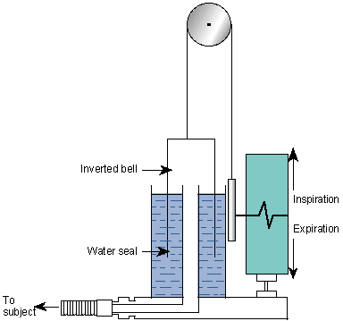

- Pulmonary Volumes, Capacities, & Function Tests
- Lung volumes - tidal vol (TV), inspiratory reserve vol (IRV), expiratory reserve vol (ERV), and residual vol (RV).
- Lung capacities – inspiratory capacity (IC), functional residual capacity (FRC), vital capacity (VC), and total lung capacity (TLC).
- Capacity – sum of more than 1 volume
- Timed vital capacity (or forced expiration volume for the 1st second, FEV1) – normal is > 80%
